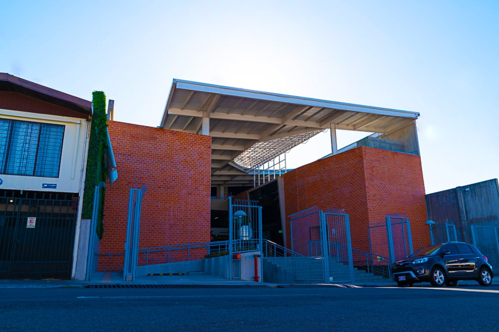
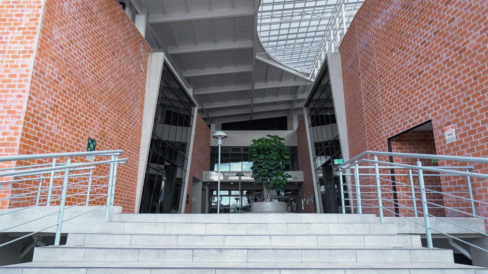
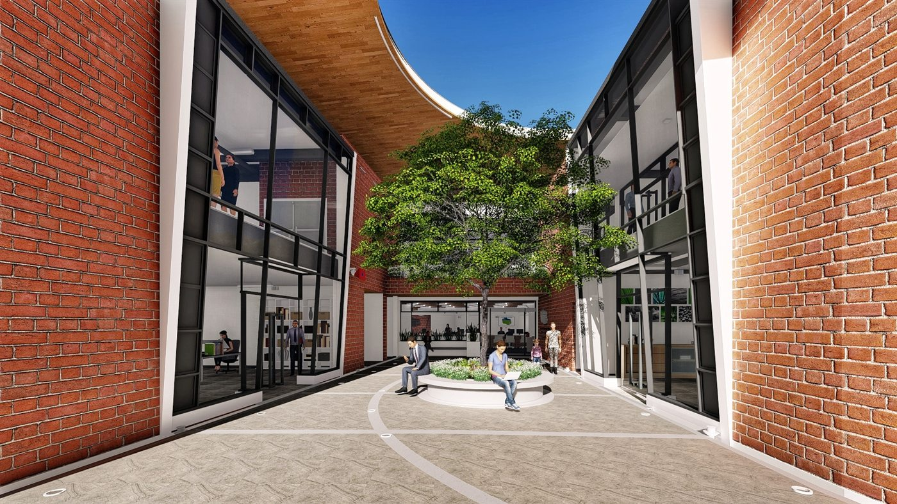
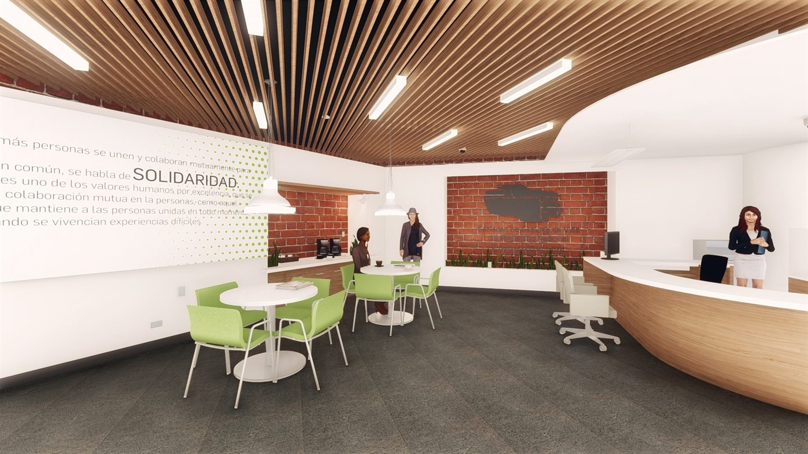

Sucursal SSVMN en Heredia
El concepto nace de las posibilidades del proyecto para resaltar en la trama urbana desde algún concepto compositivo. Se evalúan conceptos como forma, tamaño, movimiento, color y textura. De ahí que, por descarte, se considera que lo más apropiado para la Sociedad es considerar el color y la textura.

Se valoran proyectos institucionales internacionales de reconocidos arquitectos, como la ampliación del Museo del Prado de Rafael Moneo y el Museo Kolumba de Peter Zumthor.
De lo cual se concluye que una excelente forma de resaltar en la trama urbana es utilizando ladrillos, que además de tener un color vibrante posibilitan usar texturas de muchas formas.
Heredia · Diseño conceptual, planos constructivos y dirección técnica


Además de esto, es importante resaltar que brindar microespacios verdes contribuye no solo a integrarse a un entorno urbano caracterizado por plazas y parques de muchísimo uso, sino que también le da sentido a una SSVMN que busca la carbono neutralidad y una manera activa de resaltar los valores institucionales.

